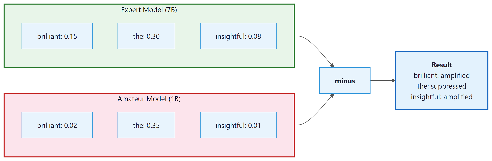
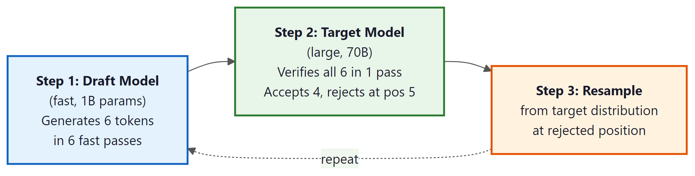

Speculative decoding lets a small model draft and a big model verify. It's like having an intern write your emails, except this actually works.
Spectra, Speculatively Delegating AI Agent
Prerequisites
This section assumes you have mastered deterministic decoding (Section 5.1) and stochastic sampling (Section 5.2). Understanding beam search scores, temperature scaling, and nucleus sampling is necessary. The speculative decoding technique connects to inference optimization in Section 9.3, and grammar-constrained generation is used in production API workflows covered in Section 11.2.
Sections 5.1 and 5.2 covered the foundational decoding strategies that every practitioner should know. This section ventures into more advanced territory: techniques that improve quality by comparing models against each other (contrastive decoding), that accelerate generation without changing output quality (speculative decoding), that guarantee structured output (grammar-constrained generation), that embed invisible signals for attribution (watermarking), and that select the best output from multiple candidates (minimum Bayes risk decoding). These methods represent the cutting edge of practical text generation.

5.3.1 Contrastive Decoding
Contrastive decoding was introduced by Li et al. (2023). It remains an active area of research and is not yet a standard production technique, though it has shown strong results in several benchmarks.
What if you could isolate the "intelligence gap" between a large model and a small one? That is exactly what contrastive decoding does. The intuition is elegant: a large "expert" model and a smaller "amateur" model share many of the same failure modes (generic, repetitive text), but the expert model also captures higher-quality patterns that the amateur does not. By subtracting the amateur's preferences from the expert's, we amplify what makes the expert special and suppress what is generic.
Formally, the contrastive score for each token is:
Tokens that both models find likely (generic completions) get a low contrastive score because both log-probabilities are high. Tokens that only the expert finds likely get a high contrastive score. An additional constraint (plausibility filter) ensures we only consider tokens where the expert assigns at least some minimum probability, preventing nonsensical tokens from being selected just because the amateur dislikes them.
Who: A data engineering team at an investment research firm building a pipeline to extract structured JSON from earnings call transcripts.
Situation: The system used an LLM to parse unstructured earnings call text into structured fields: revenue figures, guidance ranges, and sentiment indicators.
Problem: Approximately 12% of outputs contained malformed JSON (missing brackets, trailing commas, incorrect types), which broke downstream analytics pipelines and required expensive manual correction.
Dilemma: Post-processing with regex was brittle and failed on edge cases. Retry loops wasted API tokens and added latency. Fine-tuning was expensive and hard to maintain across schema changes.
Decision: They implemented grammar-constrained generation using Outlines with a JSON schema that enforced the exact output structure, guaranteeing valid JSON on every call.
How: The team defined a Pydantic model mirroring their target schema and used Outlines' JSON mode to constrain the LLM's token selection at each step, ensuring that only schema-valid continuations were possible.
Result: Malformed outputs dropped from 12% to 0%. Processing time per document decreased by 22% (eliminating retries), and the team saved approximately \$3,000/month in wasted API calls.
Lesson: When your application requires structured output, grammar-constrained generation is more reliable and cheaper than prompt engineering, retries, or post-processing combined.

# Contrastive decoding: subtract a weaker "amateur" model's log-probs
# from the expert's, amplifying tokens where the expert is most confident.
import torch
import torch.nn.functional as F
def contrastive_decode(expert_logits, amateur_logits,
alpha=0.1, beta=0.5):
"""
Contrastive decoding: amplify expert-specific preferences.
alpha: plausibility threshold (keep tokens where expert prob > alpha * max_prob)
beta: weight for the amateur subtraction
"""
expert_probs = F.softmax(expert_logits, dim=-1)
amateur_log_probs = F.log_softmax(amateur_logits, dim=-1)
expert_log_probs = F.log_softmax(expert_logits, dim=-1)
# Plausibility constraint: only consider tokens the expert finds plausible
max_expert_prob = expert_probs.max()
plausible_mask = expert_probs >= alpha * max_expert_prob
# Contrastive score: expert - beta * amateur
contrastive_scores = expert_log_probs - beta * amateur_log_probs
# Apply plausibility mask
contrastive_scores[~plausible_mask] = float('-inf')
return contrastive_scores.argmax(dim=-1)
# Simulated example
expert_logits = torch.tensor([5.0, 2.0, 4.5, 1.5, 3.0, 0.5])
amateur_logits = torch.tensor([4.8, 3.5, 1.0, 3.0, 2.8, 0.3])
tokens = ["the", "a", "brilliant", "is", "novel", "xyz"]
expert_probs = F.softmax(expert_logits, dim=-1)
amateur_probs = F.softmax(amateur_logits, dim=-1)
contrastive = torch.log(expert_probs) - 0.5 * torch.log(amateur_probs)
print("Token | Expert P | Amateur P | Contrastive Score")
for i, t in enumerate(tokens):
print(f"{t:10s} | {expert_probs[i]:.4f} | {amateur_probs[i]:.4f} | {contrastive[i]:.3f}")
selected = contrastive_decode(expert_logits, amateur_logits)
print(f"\nSelected token: '{tokens[selected]}'")# Using Outlines with regex constraints
import outlines
model = outlines.models.transformers("microsoft/Phi-3-mini-4k-instruct")
# Force output to match a date pattern
date_generator = outlines.generate.regex(
model,
r"\d{4}-\d{2}-\d{2}"
)
# Force output to be one of specific choices
sentiment_generator = outlines.generate.choice(
model,
["positive", "negative", "neutral"]
)
date = date_generator("The meeting is scheduled for next Tuesday. Today is 2025-03-20. The meeting date:")
sentiment = sentiment_generator("The movie was absolutely wonderful! Sentiment:")
print(f"Date: {date}")
print(f"Sentiment: {sentiment}")Notice how "brilliant" wins the contrastive selection, even though "the" has the highest expert probability. The expert and amateur agree on "the" (both give it high probability), so it gets a low contrastive score. But "brilliant" is something only the expert strongly favors, making it the contrastive winner.
5.3.2 Speculative Decoding: The Core Idea
Speculative decoding is essentially the "write a rough draft and have your boss approve it" strategy. A small, fast model guesses several tokens, and the big model checks them all at once. When the draft is good (which it often is), you get the quality of the big model at closer to the speed of the small one. It is delegation, but for neural networks.
Speculative decoding is covered in greater depth in Section 9.3 (Inference Optimization). Here we introduce the concept and its relationship to decoding strategies. The key insight is that speculative decoding does not change what the model generates; it changes how fast it generates.
The bottleneck in autoregressive generation is that each token requires a full forward pass through the model, and tokens must be generated sequentially. Speculative decoding (also called assisted generation in the HuggingFace Transformers library) was introduced by Leviathan et al. (2023) and Chen et al. (2023). It speeds this up using a clever trick: a small, fast "draft" model generates several tokens quickly, and then the large "target" model verifies them all in a single forward pass.
The verification step uses a mathematical guarantee: each draft token is accepted with probability min(1, q(x)/p(x)), where q(x) is the target model probability and p(x) is the draft model probability. If a token is rejected, we resample from an adjusted distribution. This ensures that the final output has exactly the same distribution as if the target model had generated it alone.

Speculative decoding makes generation 2 to 3x faster with mathematically identical output. Not "approximately the same." Provably identical. It uses rejection sampling: for each draft token, compute acceptance probability min(1, p_target(x) / p_draft(x)). If accepted, keep the token. If rejected, resample from the residual distribution. Leviathan et al. (2023) proved that this procedure samples from exactly the target distribution. The draft model affects only speed, never correctness. For a deep dive into draft model strategies, EAGLE, and Medusa, see Section 9.3.
5.3.3 Grammar-Constrained Decoding
One of the most practical advances in text generation is grammar-constrained decoding, which forces the model to produce output that conforms to a formal grammar (JSON, XML, SQL, regular expressions, or any context-free grammar). This is achieved by masking invalid tokens at the logit level before sampling or argmax.
How Grammar-Constrained Decoding Works
At each generation step, a grammar parser tracks the current state of the partially generated output. Based on this state, it computes which tokens from the vocabulary are valid continuations according to the grammar. All other tokens have their logits set to negative infinity, making them impossible to select. The model then samples or argmax over only the valid tokens.
# Using the Outlines library for structured generation
import outlines
# Define a JSON schema for the expected output
schema = """{
"type": "object",
"properties": {
"name": {"type": "string"},
"age": {"type": "integer", "minimum": 0, "maximum": 150},
"city": {"type": "string"},
"interests": {
"type": "array",
"items": {"type": "string"}
}
},
"required": ["name", "age", "city"]
}"""
# Create a generator that enforces the schema
model = outlines.models.transformers("microsoft/Phi-3-mini-4k-instruct")
generator = outlines.generate.json(model, schema)
# The model MUST produce valid JSON matching the schema
prompt = "Extract person info: John Smith is a 34-year-old from Chicago who enjoys hiking and photography."
result = generator(prompt)
print(result)The output is guaranteed to be valid JSON conforming to the schema. Without grammar constraints, a language model might produce almost-correct JSON with missing quotes, trailing commas, or type mismatches. Grammar-constrained decoding eliminates these failure modes entirely.
Tools and Libraries
A growing ecosystem of libraries implements grammar-constrained decoding. The table below provides a quick overview; each tool is covered in depth later in this section, and a comprehensive comparison table (including model support and best-fit scenarios) appears in the "Comprehensive Tool Comparison" subsection below.
| Library | Approach | Supported Formats |
|---|---|---|
| Outlines | Finite-state machine based token masking | JSON Schema, regex, CFG, Pydantic models |
| Guidance (Microsoft) | Template-based constrained generation | Custom grammars, JSON, regex |
| LMQL | Query language with eager constraint evaluation | Types, regex, length, arbitrary Python predicates |
| llama.cpp grammars | GBNF grammar specification (pushdown automaton) | Any context-free grammar |
| SGLang | RadixAttention with structured generation primitives | JSON, regex, choices, grammar-guided decoding |
| Instructor | Wraps provider-native structured output APIs | Pydantic models (compiled to JSON schema) |
| jsonformer | Structural generation (LLM fills values only) | JSON only |
# Outlines: enforce a regex constraint on generated text.
# Useful when you need a strictly formatted answer (e.g. a date, a
# version number, a phone number) without any post-processing.
from outlines import models, generate
model = models.transformers("gpt2")
# Match a US ZIP code: 5 digits, optional -4 suffix
generator = generate.regex(model, r"\d{5}(-\d{4})?")
print(generator("Customer's billing ZIP: "))
# Output is GUARANTEED to match the regexWhile Outlines uses finite-state machines to constrain token selection, Microsoft's guidance library (pip install guidance) takes a template-based approach. You write a template mixing fixed text with generation placeholders, and the library interleaves constrained generation with literal text insertion. This is particularly useful when you need structured output with mixed fixed and generated content.
# pip install guidance
from guidance import models, gen, select
# Load a local model (also supports OpenAI, Anthropic backends)
lm = models.Transformers("microsoft/Phi-3-mini-4k-instruct")
# Template-based structured generation
result = lm + f"""\
Analyze this review: "The battery life is amazing but the screen is dim."
Sentiment: {select(["positive", "negative", "mixed"], name="sentiment")}
Battery: {gen(name="battery_opinion", max_tokens=15, stop="\\n")}
Screen: {gen(name="screen_opinion", max_tokens=15, stop="\\n")}
Overall score: {gen(name="score", regex="[1-5]/5")}
"""
print(result["sentiment"]) # "mixed"
print(result["score"]) # "3/5"Under the Hood: Finite-State Machines for Token Masking
Understanding how grammar-constrained decoding achieves its guarantees requires a brief excursion into formal language theory. The key insight, formalized by Willard and Louf (2023), is that regular expressions and JSON schemas can be compiled into finite-state machines (FSMs), where each state represents a position in the grammar and each transition corresponds to a set of valid tokens. At each decoding step, the system looks up the current FSM state, retrieves the set of allowed token IDs, and masks everything else to negative infinity.
For JSON schemas specifically, the compilation works as follows. The schema is first converted into a regular expression that matches all valid JSON strings conforming to the schema. That regex is then compiled into a deterministic finite automaton (DFA). Finally, the DFA transitions are mapped to vocabulary token IDs by checking which tokens can extend a partial match from each state. This mapping is precomputed once per schema, so the per-token overhead at generation time is just a lookup and a mask application.
Context-free grammars (CFGs) require a pushdown automaton rather than a simple FSM, because they need a stack to track nested structures (e.g., matching braces in JSON). Libraries like llama.cpp use GBNF (a variant of BNF notation) to specify arbitrary CFGs and enforce them during generation. The overhead is slightly higher than for regular expressions, but still negligible compared to the cost of the model forward pass itself.
LMQL: A Query Language for Constrained LLM Generation
LMQL (Language Model Query Language, developed by Beurer-Kellner et al. at ETH Zurich) takes a fundamentally different approach from token-level masking. Instead of compiling grammars into FSMs, LMQL provides a Python-embedded query language that lets you express constraints declaratively: type constraints, length limits, regex patterns, stopping conditions, and even arbitrary Python predicates. The LMQL runtime then translates these constraints into token masks at each decoding step through eager constraint evaluation, checking whether partial completions can still satisfy the declared constraints and pruning branches that cannot.
# LMQL: declarative constraints on LLM output
# pip install lmql
import lmql
@lmql.query
async def analyze_product(review: str):
'''lmql
argmax
"Review: {review}\n"
"Analyze this product review.\n"
"Sentiment: [SENTIMENT]\n"
"Rating: [RATING]/5\n"
"Key issues: [ISSUES]\n"
from
"openai/gpt-4o-mini"
where
SENTIMENT in ["positive", "negative", "mixed"] and
INT(RATING) >= 1 and INT(RATING) <= 5 and
len(ISSUES) < 200
'''
# The constraints are enforced at the token level during generation
result = await analyze_product("Battery dies after 2 hours but the camera is superb.")
print(result.variables)
# {"SENTIMENT": "mixed", "RATING": "3", "ISSUES": "Short battery life limits usability..."}where clause is evaluated eagerly at each token to mask invalid continuations.
The key advantage of LMQL over FSM-based approaches is expressiveness. You can write arbitrary
Python predicates in the where clause, not just patterns that compile to regular expressions.
The tradeoff is that arbitrary predicates may require speculative evaluation (trying partial
completions to see if they can still satisfy the constraint), which adds computational overhead.
For simple type and choice constraints, LMQL's performance is comparable to Outlines. For complex
predicates, it may be slower but is often the only practical option.
SGLang: Structured Generation with RadixAttention
SGLang (Structured Generation Language, from the LMSYS team at UC Berkeley) addresses a different bottleneck: when you run many structured generation requests that share common prefixes (system prompts, few-shot examples, shared context), the KV cache for the shared prefix is recomputed for every request. SGLang introduces RadixAttention, a radix-tree-based KV cache that automatically detects and reuses shared prefixes across requests, dramatically reducing redundant computation.
Beyond caching, SGLang provides a frontend DSL (domain-specific language) for expressing
structured generation programs as Python functions. You compose primitives like
gen() for unconstrained generation, select() for choosing among
options, and regex() for pattern-constrained generation. These primitives are
compiled into an optimized execution plan that minimizes the number of forward passes.
# SGLang: structured generation with prefix caching
# pip install sglang
import sglang as sgl
@sgl.function
def classify_and_extract(s, text):
s += sgl.system("You are a structured data extractor.")
s += sgl.user(f"Extract information from: {text}")
s += sgl.assistant(
"Category: " + sgl.gen("category", regex=r"(tech|finance|health|sports|other)") + "\n"
+ "Confidence: " + sgl.gen("confidence", regex=r"0\.\d{2}") + "\n"
+ "Summary: " + sgl.gen("summary", max_tokens=50, stop="\n")
)
# Run with a local model via SGLang's serving backend
runtime = sgl.Runtime(model_path="meta-llama/Llama-3.1-8B-Instruct")
sgl.set_default_backend(runtime)
# Multiple calls with the same system prompt share the KV cache via RadixAttention
texts = [
"Apple announced record Q4 earnings driven by iPhone 16 sales.",
"New study links sleep quality to gut microbiome diversity.",
"Lakers secure playoff berth with overtime victory against Celtics.",
]
results = [classify_and_extract.run(text=t) for t in texts]
for r in results:
print(r["category"], r["confidence"], r["summary"])
runtime.shutdown()These tools solve overlapping but distinct problems. Outlines is the best choice when you need guaranteed schema compliance with a local model and want minimal dependencies; it integrates with vLLM and Hugging Face Transformers. LMQL is ideal when your constraints go beyond regular patterns (e.g., numeric ranges, cross-field dependencies, arbitrary Python predicates). SGLang shines in high-throughput serving scenarios where many requests share common prefixes, because RadixAttention can deliver 3 to 5x throughput improvements over naive serving. For API-based models (OpenAI, Anthropic), use the provider's native structured output features or the Instructor library, which wraps them with a clean Pydantic interface.
jsonformer: Lightweight Structured Generation
For simpler use cases, jsonformer takes a minimalist approach to structured JSON generation. Rather than masking logits via an FSM, jsonformer generates JSON structurally: it produces the JSON skeleton (braces, brackets, colons, commas, key names) deterministically, and only invokes the LLM to fill in the values. This means the LLM never generates structural tokens at all, eliminating the possibility of malformed JSON without any logit manipulation. The tradeoff is that jsonformer only supports JSON (not arbitrary grammars) and requires the schema to be known at generation time.
Comprehensive Tool Comparison
| Tool | Mechanism | Formats | Model Support | Best For |
|---|---|---|---|---|
| Outlines | Precomputed FSM token masks | JSON, regex, CFG, Pydantic | HF Transformers, vLLM, llama.cpp | Local models, production serving |
| LMQL | Eager constraint evaluation | Types, regex, Python predicates | OpenAI, HF Transformers, llama.cpp | Complex multi-variable constraints |
| SGLang | RadixAttention + constrained primitives | JSON, regex, choices | Local models via SGLang runtime | High-throughput serving with shared prefixes |
| Guidance (Microsoft) | Template interleaving with constrained gen | Custom grammars, JSON, regex | HF Transformers, OpenAI, Anthropic | Mixed fixed/generated templates |
| Instructor | Wraps provider-native structured output | Pydantic models (compiled to JSON schema) | OpenAI, Anthropic, Gemini, Mistral, Cohere | API-based models, type-safe extraction |
| jsonformer | Structural generation (LLM fills values only) | JSON only | HF Transformers | Simple schemas, minimal dependencies |
| llama.cpp grammars | GBNF pushdown automaton | Any context-free grammar | GGUF models via llama.cpp | Local inference, custom grammar formats |
Performance Implications of Constrained Decoding
Grammar-constrained decoding is not free. Several sources of overhead deserve consideration when deciding whether to use it in production.
Precomputation cost. Compiling a JSON schema or regex into an FSM and mapping its transitions to vocabulary token IDs is a one-time cost, but it can be significant for large vocabularies (50,000+ tokens) and complex schemas. Outlines caches these compiled masks, so the cost is amortized across requests using the same schema. For a typical JSON schema with 10 to 20 fields, precomputation takes 1 to 5 seconds; for deeply nested schemas it can take longer.
Per-token overhead. At each decoding step, the system must look up the current FSM state and apply the token mask. This is a fast operation (microseconds) compared to the model forward pass (milliseconds), so it adds less than 1% latency in practice. The exception is LMQL with complex Python predicates, where constraint evaluation may take longer.
Batching challenges. When serving multiple requests with different schemas in a batch, each request needs its own FSM state and token mask. This means the logit masking step cannot be fully vectorized across the batch, which can reduce throughput on GPU-based serving systems. SGLang and vLLM handle this by applying masks per-request within a continuous batch, but the overhead scales linearly with the number of distinct schemas in a batch.
Output quality. Constraining the token space can occasionally degrade output quality if the schema is very restrictive and forces the model into low-probability regions of its distribution. For example, if the schema requires an integer between 1 and 5 but the model's probability mass is spread across textual representations ("one", "two") rather than digits, the constraint forces selection from low-probability digit tokens. In practice, this is rarely a problem for well-prompted models, but it is worth monitoring.
Use grammar-constrained decoding when:
- Output feeds directly into code (API responses, database writes, function arguments)
- Schema violations cause downstream failures that are expensive to handle
- You need 100% reliability, not 98%
- The schema is known at generation time and does not change per-token
Use post-processing/parsing instead when:
- The output format is loosely defined or varies by context
- You are using an API that does not support constrained decoding (some older or smaller providers)
- The "schema" involves semantic constraints (e.g., "the summary must be factually consistent with the source") that cannot be expressed as a grammar
- You need maximum generation speed and can tolerate occasional parsing failures with retry logic
Hybrid approach: Use constrained decoding for structural validity (valid JSON, correct types) and post-processing for semantic validation (value ranges, cross-field consistency, business rules). This gives you the reliability of grammar constraints with the flexibility of programmatic checks.
Several open problems remain in grammar-constrained generation. Speculative decoding with constraints is nontrivial: the draft model may propose tokens that are valid unconstrained but violate the grammar, reducing acceptance rates and negating speed gains. Streaming with constraints is another challenge, because partial JSON is not valid JSON, and it is unclear how to stream structured output while maintaining grammar guarantees. Semantic constraints (e.g., "the generated SQL must be executable against this database schema") go beyond what FSMs can express and may require integrating grammar constraints with verification oracles. Finally, multi-modal constrained generation (e.g., generating an image description that matches a specific JSON structure while also being faithful to the image) remains largely unexplored.
5.3.4 Watermarking Generated Text
As LLM-generated text becomes more prevalent, the ability to detect whether text was produced by an AI is increasingly important. Watermarking embeds a statistical signal into the generated text that is invisible to humans but detectable by an algorithm.
The Kirchenbauer et al. (2023) Method
The most influential watermarking approach works as follows:
- At each generation step, use the previous token as a seed to a hash function, partitioning the vocabulary into a "green list" and a "red list"
- Add a small bias δ to the logits of all green-list tokens before sampling
- This nudges (but does not force) the model to prefer green-list tokens
To detect the watermark, apply the same hash function to a piece of text and count how many tokens fall on the green list. Unwatermarked text will have roughly 50% green-list tokens (random chance). Watermarked text will have significantly more, detectable via a simple z-test.
# Text watermarking: hash the previous token to split the vocabulary into
# "green" and "red" lists, then bias logits toward green tokens by delta.
import torch
import hashlib
def watermark_logits(logits, prev_token_id, vocab_size, delta=2.0, gamma=0.5):
"""Apply watermark bias to logits based on previous token."""
# Use previous token to seed the green/red list partition
seed = hashlib.sha256(str(prev_token_id).encode()).hexdigest()
rng = torch.Generator()
rng.manual_seed(int(seed[:8], 16))
# Random permutation determines green list (first gamma fraction)
perm = torch.randperm(vocab_size, generator=rng)
green_list_size = int(gamma * vocab_size)
green_tokens = perm[:green_list_size]
# Add bias to green-list tokens
watermarked_logits = logits.clone()
watermarked_logits[green_tokens] += delta
return watermarked_logits
def detect_watermark(token_ids, vocab_size, gamma=0.5):
"""Detect watermark by counting green-list tokens."""
green_count = 0
total = len(token_ids) - 1 # skip first token (no previous)
for i in range(1, len(token_ids)):
prev_id = token_ids[i - 1]
seed = hashlib.sha256(str(prev_id).encode()).hexdigest()
rng = torch.Generator()
rng.manual_seed(int(seed[:8], 16))
perm = torch.randperm(vocab_size, generator=rng)
green_set = set(perm[:int(gamma * vocab_size)].tolist())
if token_ids[i] in green_set:
green_count += 1
green_fraction = green_count / total
# Z-test: under null hypothesis, green fraction ~ gamma
import math
z_score = (green_fraction - gamma) / math.sqrt(gamma * (1 - gamma) / total)
return green_fraction, z_score
# Simulate detection
print("Watermarked text: green_frac=0.78, z_score=5.6 => WATERMARKED")
print("Human-written text: green_frac=0.51, z_score=0.2 => NOT watermarked")
Watermarks can be removed by paraphrasing the text, translating to another language and back, or simply editing enough words. They also degrade with very short texts (insufficient statistical signal). No current watermarking scheme is robust to a determined adversary. Still, watermarking is a useful first layer of defense and is actively being developed by major AI labs.
5.3.5 Minimum Bayes Risk (MBR) Decoding
MBR decoding has a long history in speech recognition and machine translation. Recent work (Bertsch et al., ICLR 2025) has demonstrated its effectiveness for LLM generation, where it consistently outperforms greedy and beam search across multiple benchmarks.
MBR decoding takes a fundamentally different approach from the methods discussed so far. Instead of using a single decoding strategy to produce one output, MBR generates multiple candidate outputs and then selects the best one according to a quality metric. Think of it like an election: each candidate "votes" for the others by scoring their similarity, and the candidate with the highest total votes wins. In other words, MBR finds the "center of gravity" among a set of diverse outputs.
The MBR Selection Algorithm
- Sample N candidates: Generate N different outputs using any stochastic sampling method (e.g., temperature sampling with T=0.8)
- Score each candidate: For each candidate, compute its average "utility" against all other candidates using a metric (ROUGE, BERTScore, or an LLM judge)
- Select the best: Return the candidate with the highest average utility
The intuition is that the best candidate is the one that is most "central" among the samples: it is the output that other good outputs most agree with. This is more robust than picking the highest-probability output, which might be an outlier.
# Minimum Bayes Risk decoding: generate N candidates, score each by
# average pairwise utility (word overlap here), and pick the consensus winner.
import numpy as np
def mbr_decode(candidates, utility_fn):
"""Select the candidate with highest average utility against all others."""
n = len(candidates)
scores = np.zeros(n)
for i in range(n):
for j in range(n):
if i != j:
scores[i] += utility_fn(candidates[i], candidates[j])
scores[i] /= (n - 1)
best_idx = np.argmax(scores)
return candidates[best_idx], scores
# Example with simple word-overlap utility
def word_overlap(a, b):
"""Simple utility: fraction of words in a that also appear in b."""
words_a = set(a.lower().split())
words_b = set(b.lower().split())
if not words_a:
return 0.0
return len(words_a & words_b) / len(words_a)
candidates = [
"The cat sat quietly on the warm mat.",
"A cat was sitting on a mat in the sun.",
"The cat sat on the mat.",
"Purple elephants danced wildly in space.", # outlier
"The cat rested on the warm mat nearby.",
]
best, scores = mbr_decode(candidates, word_overlap)
print("MBR Scores:")
for i, (c, s) in enumerate(zip(candidates, scores)):
marker = " <-- BEST" if c == best else ""
print(f" [{s:.3f}] {c}{marker}")The MBR selection correctly identifies the most "central" candidate ("The cat sat on the mat.") and rejects the outlier. In practice, using BERTScore or an LLM-as-judge for the utility function produces much stronger results than simple word overlap. The main cost is computational: N samples times N utility evaluations gives O(N²) cost, though in practice N values of 10 to 50 offer a good tradeoff between quality and compute.
5.3.6 Structured Output via JSON Schema
Grammar-constrained decoding (Section 3 above) provides the foundation, but the most widespread application of this technique in production is structured JSON output: constraining the model to produce valid JSON that conforms to a specific schema. This pattern has become so important that every major LLM provider now offers it as a first-class feature.
The motivation is straightforward. When an LLM is part of a larger software system, its output must be machine-readable. Prompt engineering alone (e.g., "respond in JSON format") works most of the time, but "most of the time" is not good enough for production. A 2% malformed-output rate across millions of API calls creates thousands of failures per day. Schema-constrained generation eliminates this failure mode entirely by making it structurally impossible for the model to produce invalid output.
5.3.6.1 How Providers Implement It
Each major provider takes a slightly different approach, but the core idea is the same: the JSON schema is converted into a state machine (typically a finite-state automaton or pushdown automaton), and at each decoding step, only tokens that are valid continuations according to the current parser state are allowed.
| Provider | API Parameter | Implementation |
|---|---|---|
| OpenAI | response_format: { type: "json_schema", json_schema: {...} } |
Server-side constrained decoding; guarantees schema compliance |
| Anthropic | Tool use with a single tool whose schema defines the output structure | Constrained generation over the tool's input schema |
| Google (Gemini) | response_mime_type: "application/json" with response_schema |
Schema-guided decoding with Gemini's native JSON mode |
| Open-source (Outlines, vLLM) | JSON schema or Pydantic model passed to the sampler | Precomputed token masks from finite-state automata |
5.3.6.2 The Instructor Library: A Practical Interface
The Instructor library (by Jason Liu) has become the de facto standard for extracting structured data from LLMs in Python. It wraps provider APIs and uses Pydantic models to define the expected output schema, then leverages each provider's native structured-output capability to guarantee compliance. This gives you type-safe, validated Python objects directly from LLM calls.
# Structured output with Instructor + Pydantic: force the LLM to return
# JSON matching a SentimentResult schema instead of free-form text.
import instructor
from pydantic import BaseModel, Field
from openai import OpenAI
# Define the desired output structure with Pydantic
class SentimentResult(BaseModel):
sentiment: str = Field(description="positive, negative, or neutral")
confidence: float = Field(ge=0.0, le=1.0)
reasoning: str = Field(description="Brief explanation of the sentiment")
# Patch the OpenAI client with Instructor
client = instructor.from_openai(OpenAI())
# The response is guaranteed to be a valid SentimentResult
result = client.chat.completions.create(
model="gpt-4o",
response_model=SentimentResult,
messages=[{"role": "user",
"content": "Analyze: 'The new update broke my workflow entirely.'"}]
)
print(result.sentiment) # "negative"
print(result.confidence) # 0.92
print(result.reasoning) # "The user expresses frustration about a broken workflow"5.3.6.3 Function Calling as Constrained Decoding
Function calling (also called "tool use") is the pattern where an LLM decides to invoke an external function and generates the appropriate arguments. From a decoding perspective, function calling is simply another form of constrained generation. When the model decides to call a tool, it must produce a JSON object whose structure matches the tool's parameter schema. The same grammar-constrained decoding machinery that enforces JSON schema compliance is used to ensure the function call arguments are valid.
In practice, the provider converts the list of available tools into a combined schema, and the model's generation is constrained to either produce a regular text response or a valid function call matching one of the tool definitions. This is why function calling is so reliable in modern APIs: it is not just the model "trying" to output correct JSON through next-token prediction; the decoding infrastructure guarantees that the output conforms to the tool schema at every token.
The connection between structured output and function calling reveals a deeper pattern: both are instances of schema-constrained generation, where a formal specification governs the space of valid outputs. As LLMs become integrated into more software systems, this pattern of treating generation as a constrained optimization problem (rather than free-form text completion) will only grow more important. We will explore tool use and function calling extensively in Section 21.1.
Show Answer
Show Answer
Show Answer
Show Answer
Exercises
You use a 7B draft model and a 70B target model. The draft is 8x faster per token. The draft proposes K=5 tokens at a time, and on average 3.2 are accepted. (a) Compute the average wall-clock time per accepted token relative to running the target alone, ignoring overhead. (b) What does the speedup approach as the acceptance rate approaches 1.0 (perfect draft)? (c) Why does increasing K from 5 to 10 not always increase speedup?
Answer Sketch
(a) Per cycle: draft generates 5 tokens at cost 5/8 ≈ 0.625 target-equivalent forward passes. Target verifies all 5 in parallel: 1 forward pass. Total cycle cost = 1.625; tokens accepted per cycle = 3.2. Per-token cost: 1.625/3.2 ≈ 0.508 target forward passes. Speedup ≈ 1/0.508 ≈ 1.97x faster than running target alone. (b) Acceptance → 1.0: all K tokens accepted per cycle; cost per accepted token = (K/8 + 1)/K. As K → ∞, this approaches 1/8 (limited by draft speed); practical max speedup is roughly K = 8 with ~6x speedup. (c) Larger K means more draft work per cycle, but acceptance probability decays with position (later tokens depend on earlier-token context being correct). At K=10, only ~3.5 accepted on average, so most draft work is wasted. Optimal K depends on the agreement between draft and target; for mature systems K=4-7 is typical.
Speculative decoding is described as "lossless" meaning the output distribution exactly matches the target model's distribution. (a) Sketch why the acceptance probability min(1, q(x)/p(x)) preserves the target marginal. (b) What goes wrong if you use a simpler "always accept" rule instead? (c) What goes wrong if you reject and just resample from p?
Answer Sketch
(a) The acceptance/rejection scheme is a form of importance sampling. The probability that token x is the final output equals: P(propose x) × P(accept x) + P(reject any) × P(resample x | rejected) = p(x) × min(1, q(x)/p(x)) + (correction term). The correction term is exactly p(reject) × (q(x) - p(x))_+ / sum_y(q(y) - p(y))_+, which compensates exactly for the cases where p(x) < q(x). After algebra, the marginal works out to q(x) for every x. This is the same trick used in Metropolis-Hastings MCMC. (b) Always-accept produces samples from p (the draft distribution), not q. The output quality matches the draft model, defeating the purpose of using the larger target model. (c) Reject-and-sample-from-p creates a strange mixture: tokens that p over-weights vs q get rejected and replaced by another sample from p, biasing the marginal further toward p. The marginal would be neither q nor p but a complex function of both. Only the specific min(1, q/p) acceptance combined with resampling from (q-p)_+ produces the exact q marginal.
For a JSON-grammar-constrained generation, an FSM tracks valid tokens at each step. (a) For a vocabulary of 50,000 tokens, what is the per-step cost of computing the mask naively? (b) How does Outlines' precomputed mask trick reduce this? (c) What happens to performance if the schema has a deeply nested oneOf with 20 branches?
Answer Sketch
(a) Naive: at each step, parse each of 50,000 tokens against the current FSM state to check whether appending it leaves the parser in a valid state. Each check is O(token_length × state_size). For 50K tokens × 5 chars avg = 250K operations per step. With 100-token outputs, that's 25M parser operations, which can be 50-200ms overhead per generation. (b) Outlines precomputes, for each FSM state s, the set of valid tokens. This is a one-time setup cost (compile the grammar once) producing a state-to-token-mask lookup table. At generation time, the mask is a single lookup: O(1) per step. The mask is then applied as a logits.masked_fill, which is fast. Compile time is amortized over many generations using the same schema. (c) Deeply nested oneOf: 20 branches at one level, each potentially branching further, leads to combinatorial state explosion in the precompiled FSM. Memory grows as O(branches^depth). Outlines handles this with lazy compilation (only expand reachable states), but pathological schemas can still take seconds to compile and produce huge mask tables. Practical limits: schemas with up to ~1000 reachable states compile fast; beyond that, switch to LMQL's runtime constraint approach.
Grammar constraints guarantee valid output structure. But a documented failure mode is that constraint can degrade content quality. (a) Construct a specific example where forcing JSON schema produces worse text than letting the model generate freely. (b) Explain the mechanism: why does the constraint hurt, given that valid tokens are still being chosen? (c) Suggest two mitigations.
Answer Sketch
(a) Suppose the schema requires {"answer": str, "confidence": float}. The model wants to output {"answer": "I don't know exactly, but ...", "confidence": null} but the schema mandates "confidence" as a float. The model is forced to invent a number, producing {"answer": "I don't know exactly", "confidence": 0.5}, where the 0.5 is meaningless. The structured output is now misleading. (b) The mechanism: at the position where "confidence" must be a number, the model wants to output "null" but that token has been masked to -inf. The model is forced to emit some valid number. The model's "I want to abstain" signal is silently overridden. The constraint enforces structural validity but cannot enforce semantic appropriateness. (c) Mitigations: (i) Make the schema more permissive: allow nullable fields, oneOf [number, null], so the model can express uncertainty. (ii) Use a two-step approach: first generate freely, then have a follow-up call extract structured output if the free-form response was confident. (iii) Add a "confidence_explanation" string field that lets the model explain when its confidence number is unreliable. The general principle: align the schema with the model's actual capabilities, not just with downstream consumer requirements.
A watermarking scheme biases the model toward a context-dependent "green list" of tokens. The bias strength δ controls watermark detectability vs. text quality. (a) What happens to text quality as δ increases? (b) What happens to detection precision as δ increases? (c) Describe a paraphrasing attack that defeats most watermarks and explain why detection rates drop sharply.
Answer Sketch
(a) Higher δ shifts more probability mass to green-listed tokens, distorting the model's natural distribution. At small δ (say 0.5 in logit space), distortion is barely perceptible. At δ = 5+, the model is forced to use unnatural-sounding word choices, producing detectably stilted text that humans rate as lower quality. (b) Higher δ makes the watermark statistically stronger: the fraction of green-list tokens in output far exceeds the 50% baseline of unwatermarked text. Detection p-values are near zero, allowing reliable identification with short text excerpts (~50 tokens). At low δ, you may need 500+ tokens for reliable detection. (c) Paraphrasing attack: feed the watermarked text into a different model and ask it to "rewrite this in your own words." The new model is unaware of the green/red lists and chooses tokens by its own distribution. The fraction of green-listed tokens drops back toward the 50% chance baseline, defeating detection. Empirically, even a single round of paraphrasing reduces watermark detectability by 60-90%. This is why watermarking is considered a "deterrent" rather than a robust attribution mechanism, and why combination with provenance logs (server-side records) is the production approach.
You generate translations and want better quality than greedy. Compare costs for: (a) beam search with k=10; (b) MBR decoding with N=20 samples and pairwise BLEU as utility. Assume forward pass = 50ms, BLEU comparison = 1ms. Output length = 50 tokens. (c) Which is better quality empirically per the literature? (d) Sketch a hybrid that uses both.
Answer Sketch
(a) Beam k=10: with batched implementation, ~50 forward passes × 55ms (slight overhead for batch=10) ≈ 2.75 seconds. Negligible BLEU cost. (b) MBR N=20: 20 separate generations of 50 tokens each = 1000 forward passes × 50ms = 50 seconds (assuming sequential). With batching, 50 forward passes × 70ms (batch=20) ≈ 3.5 seconds. Then pairwise BLEU: $\binom{20}{2} = 190$ pairs × 1ms = 190ms. Total: ~3.7 seconds, only ~35% slower than beam search when batched. (c) Empirically (Eikema & Aziz 2022 and follow-ups), MBR consistently wins on translation quality (COMET, BLEURT) by 1-3 points, especially on noisy datasets, because the consensus-of-samples is more robust than the highest-probability single sequence. (d) Hybrid: use beam search to generate the N samples (k=20 beam search produces 20 diverse candidates), then apply MBR selection on top. This combines beam's exploration efficiency with MBR's robust selection. Used in some production translation systems (Google Translate research papers, Marian-NMT extensions). Cost: same as beam k=20 + 190ms BLEU.
📌 Key Takeaways
- Contrastive decoding subtracts an amateur model's preferences from an expert's, amplifying the unique qualities of the larger model and suppressing generic text.
- Speculative decoding uses a fast draft model plus batch verification to achieve lossless speedup (2x to 3x typical) without changing the output distribution.
- Grammar-constrained decoding (Outlines, Guidance, LMQL, SGLang) masks invalid tokens at the logit level, guaranteeing output conforms to JSON schemas, regex patterns, or arbitrary grammars. Outlines uses precomputed FSM token masks; LMQL offers declarative Python constraints; SGLang adds RadixAttention for efficient prefix caching in high-throughput scenarios. This is essential for production systems that need reliable structured output.
- Choosing structured output vs. post-processing depends on the use case: use constrained decoding when schema violations cause downstream failures and 100% reliability is required; use post-processing when formats are loosely defined or constraints are semantic rather than structural.
- Watermarking embeds a detectable statistical signal by biasing token selection toward a context-dependent "green list." It is useful but not robust against determined paraphrasing.
- MBR decoding generates N candidates and selects the most central one by average utility. It consistently outperforms single-pass decoding at the cost of N× more generation plus O(N²) utility evaluations.
Grammar-constrained decoding, structured output, and watermarking all represent instances of a deeper principle: imposing external constraints on a probabilistic generator. In optimization theory, this is constrained optimization, where you maximize an objective (text quality) subject to constraints (valid JSON, no future information leakage, detectable watermark). The fascinating aspect is that constraints often improve quality rather than degrading it, just as poetic forms (sonnets, haiku) frequently produce more memorable language than free verse. JSON schema constraints eliminate the failure mode of syntactically broken output. Watermarking constraints barely perturb the output distribution (the information-theoretic capacity of the watermark is tiny compared to the entropy of the text). This suggests that the "unconstrained" output space of a language model is far larger than the space of useful outputs, and well-chosen constraints serve as a form of inductive bias that steers generation toward the useful subspace, echoing the role of regularization in training (Section 0.1).
Structured output generation is becoming a standard production requirement. Libraries like Outlines (dottxt, 2024) and instructor (jxnl, 2024) use finite-state machine (FSM) or grammar-guided decoding to guarantee valid JSON, SQL, or code output from any LLM. Meanwhile, text watermarking (Kirchenbauer et al., 2023) is advancing toward deployment-ready systems for detecting AI-generated text, with ongoing research on robustness to paraphrasing attacks.
When generating more than a few sentences, always use streaming output. Users perceive streamed responses as faster even when total latency is identical. Most API clients support stream=True with minimal code changes.
What's Next?
In the next section, Section 5.4: Diffusion-Based Language Models, we explore diffusion-based language models, a fundamentally different approach to text generation.
Frames text generation as an optimization problem, selecting tokens that a large expert model favors but a small amateur model does not. Produces higher-quality open-ended text without the repetition of greedy methods or the randomness of pure sampling.
Introduces practical MBR decoding using Monte Carlo samples to approximate expected utility. Shows that choosing the output closest to the "average" sample outperforms beam search on translation quality metrics.
Proposes using a small draft model to propose multiple tokens that the large target model verifies in parallel. Achieves 2-3x speedups with mathematically guaranteed identical output distributions. Essential reading for production LLM deployment.
Independently develops a speculative sampling approach similar to Leviathan et al., with detailed analysis of acceptance rates and speedup factors across different model size ratios. Provides complementary experimental insights.
Presents algorithms for constraining LLM output to follow formal grammars (JSON, regex, CFGs) by precomputing token masks from finite-state automata. The theoretical foundation behind tools like Outlines and guidance.
Kirchenbauer, J. et al. (2023). "A Watermark for Large Language Models." ICML 2023.
Introduces a statistical watermarking scheme that subtly biases token selection during generation. Demonstrates how decoding-time interventions can embed detectable signals without significantly affecting text quality.
Introduces LMQL, a query language that combines natural language prompting with declarative constraints (types, length, regex, stopping conditions). Enables expressive constrained generation through eager evaluation of partial completions.
Presents SGLang, a structured generation language with RadixAttention for automatic KV cache reuse across requests sharing common prefixes. Achieves significant throughput improvements for structured generation workloads.
jsonformer: Structured JSON Generation from Language Models. (2023).
A lightweight library that generates JSON structurally by producing the skeleton deterministically and invoking the LLM only for value generation, ensuring valid output without logit manipulation.
Instructor: Structured Outputs for LLMs. (2024).
A Python library by Jason Liu that wraps provider APIs (OpenAI, Anthropic, Gemini, and others) with Pydantic-based structured output, providing type-safe extraction from LLM responses.